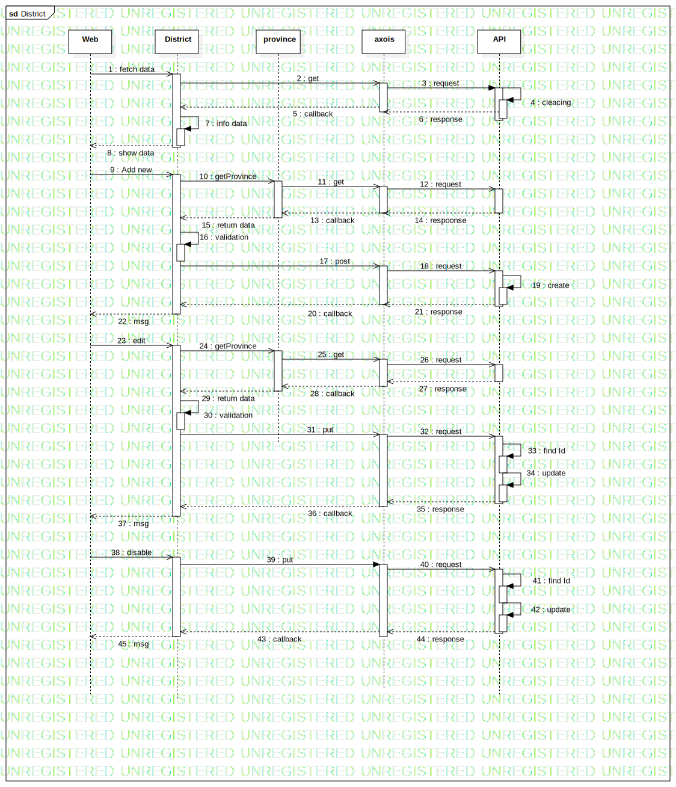

Interaction1
UMLInteraction
Models
::
Dirstrict
::
Interaction1
Description
none
Diagrams

District
Participants
Web
District
province
axois
API
Messages
fetch data (Web→District)
get (District→axois)
request (axois→API)
cleacing (API→API)
callback (axois→District)
response (API→axois)
info data (District→District)
show data (District→Web)
Add new (Web→District)
getProvince (District→province)
get (province→axois)
request (axois→API)
callback (axois→province)
respoonse (API→axois)
return data (province→District)
validation (District→District)
post (District→axois)
request (axois→API)
create (API→API)
callback (axois→District)
response (API→axois)
msg (District→Web)
edit (Web→District)
getProvince (District→province)
get (province→axois)
request (axois→API)
response (API→axois)
callback (axois→province)
return data (province→District)
validation (District→District)
put (District→axois)
request (axois→API)
find Id (API→API)
update (API→API)
response (API→axois)
callback (axois→District)
msg (District→Web)
disable (Web→District)
put (District→axois)
request (axois→API)
find Id (API→API)
update (API→API)
callback (axois→District)
response (API→axois)
msg (District→Web)
Properties
Name
Value
name
Interaction1
stereotype
null
visibility
public
isReentrant
true
Owned Elements
District